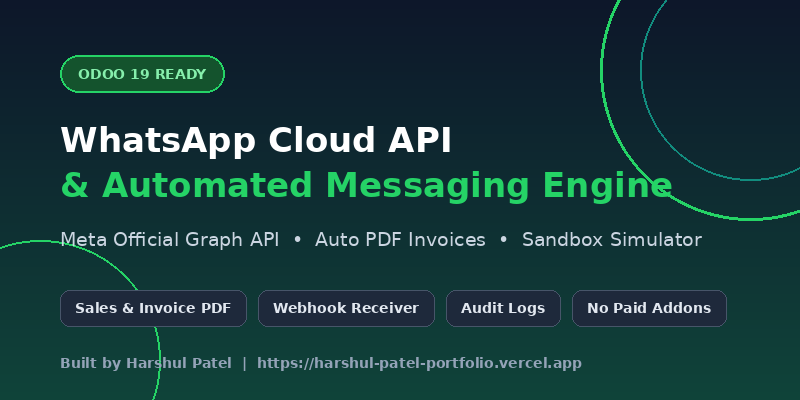
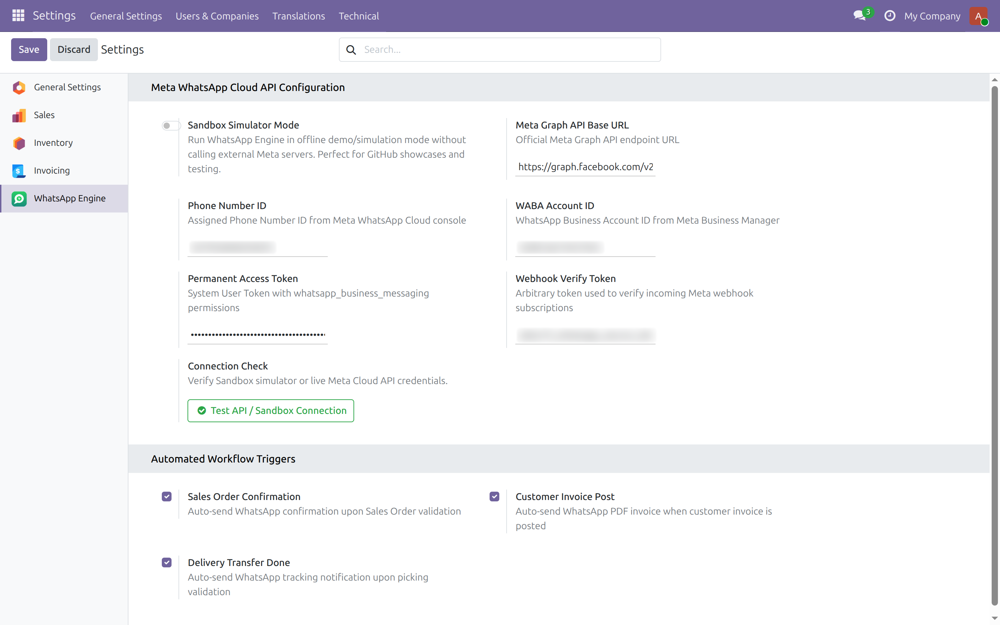
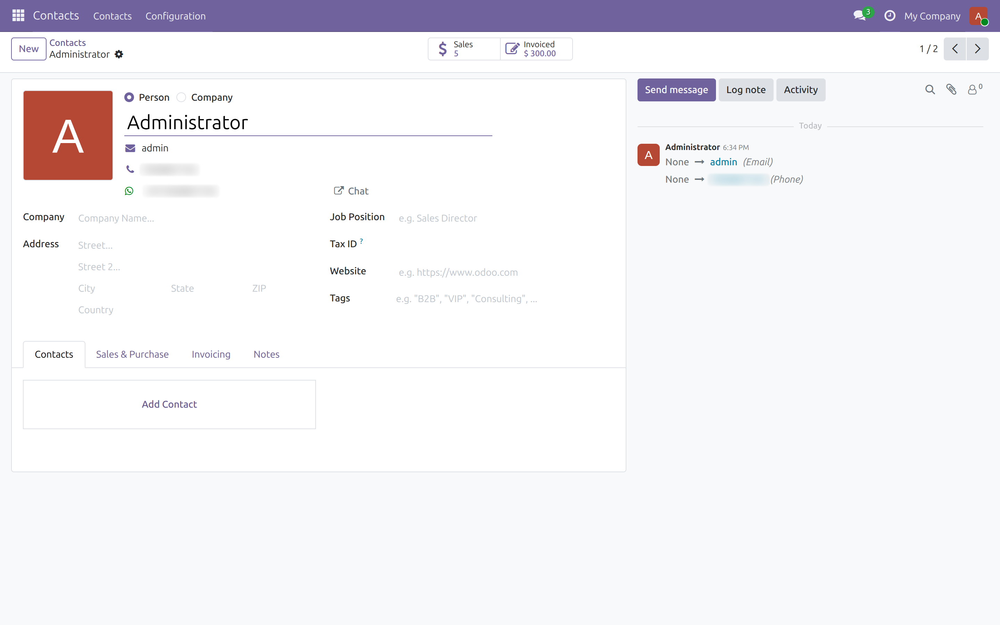
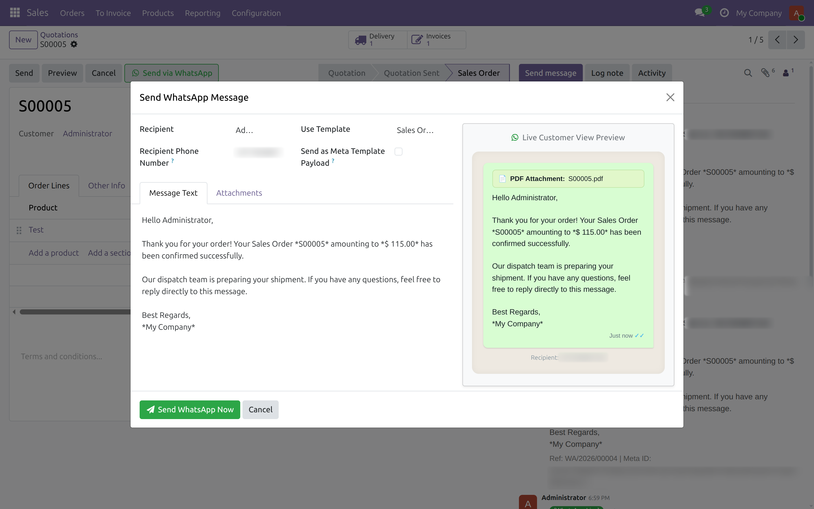
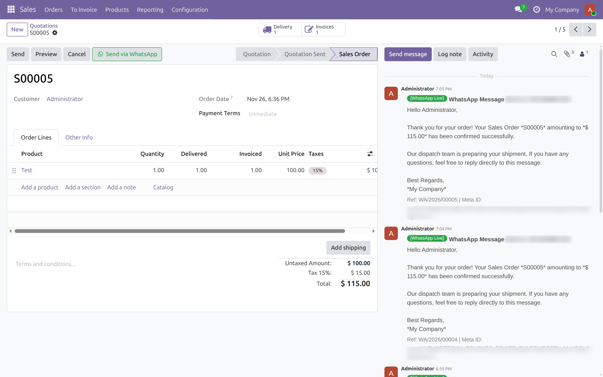
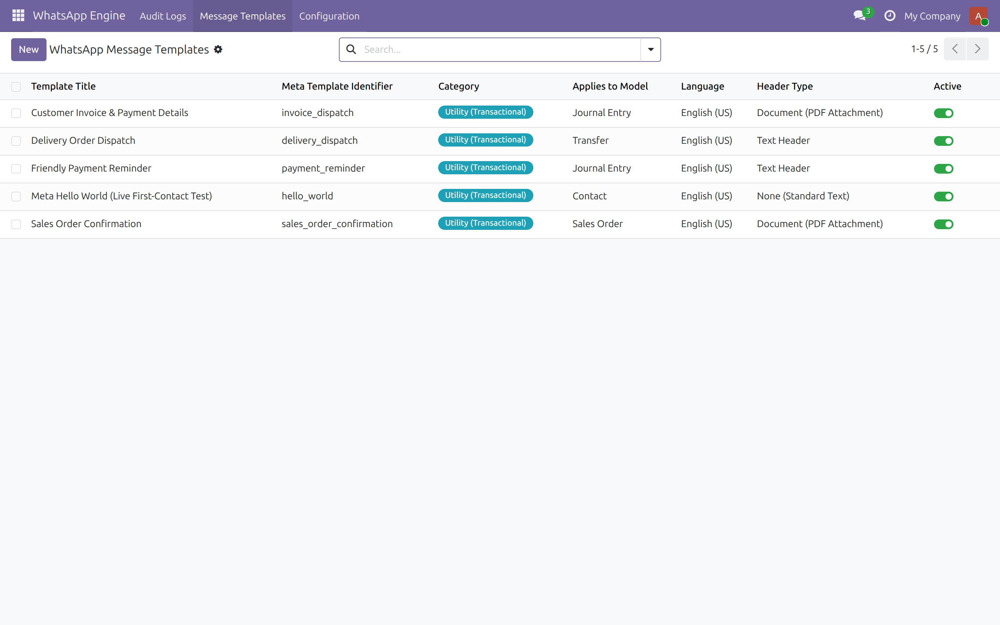
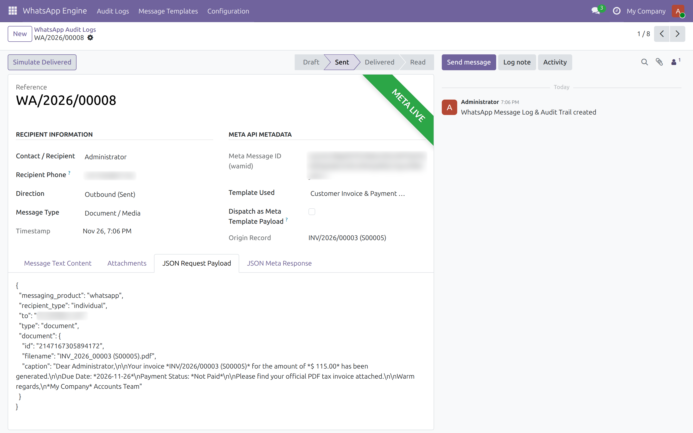

Connects directly to Meta's official WhatsApp Cloud API. No recurring Twilio, Wati, or IAP credit subscriptions required — works out of the box on both Odoo Community & Enterprise.
Includes a full local sandbox engine for instant testing and client demonstrations without needing Meta credentials. Generates realistic JSON request/response traces and delivery states.
Automatically renders Odoo QWeb PDFs (Invoices, Sales Orders, Delivery Slips), uploads media to Meta Graph API, and runs daily overdue payment reminder cron jobs.

phone architecture. Customer numbers are automatically formatted into clean E.164 international WhatsApp numbers using country codes, with a one-click Chat launcher right on the Contact card.
0123456789) into clean WhatsApp identifiers (+910123456789).

wamid ID.
[WhatsApp Live] dispatches from [WhatsApp Sandbox] test runs.WA/YYYY/XXXXX), and Meta verification ID right inside Odoo's Chatter.
{{partner_name}}, {{order_name}}, {{invoice_name}}, {{amount_total}}, {{amount_residual}}, {{due_date}}, {{scheduled_date}}, {{payment_state}}, and {{company_name}}.
/whatsapp/webhook controller verifies Meta signatures and processes live delivery/read receipts and customer replies.
| Supported Odoo Version | Odoo 19.0 (Community & Enterprise Editions) |
|---|---|
| Core Dependencies | base, mail, sale, account, stock |
| API Protocol | Meta WhatsApp Cloud API (Graph API v19.0 – v23.0) + Official Media Upload |
| Security & Access Control | Odoo 19 res.groups.privilege Role-Based Access (User & Administrator) |
| Scheduled Automation | Automated Retry Queue (15-min interval) & Daily Overdue Payment Reminder Cron |